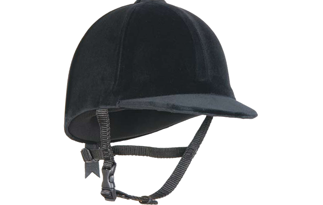
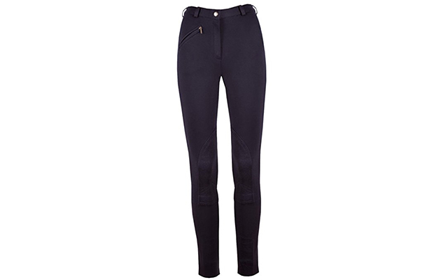
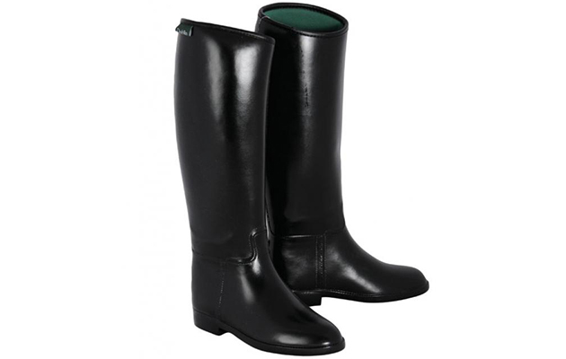
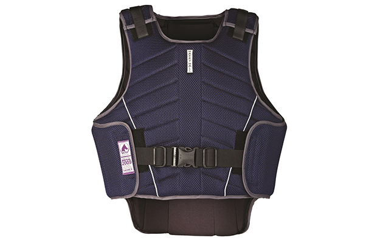
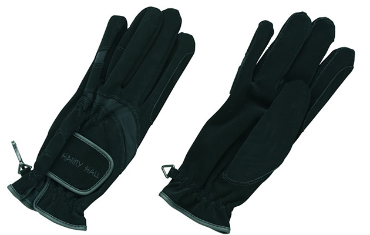

Equestrian Essentials
You’ll probably decide to ride either English or western, and this will help you decide what type of essentials to buy. To ensure that you enjoy a comfortable and safe horse-riding experience, it’s important that you equip yourself with the right riding gear essentials. Here are 5 most important horse-riding essentials that you must have for horse-riding adventures:
Riding Hat
Starting from the most important essential, having a sturdy quality riding hat is an absolute must for you to wear whenever you are riding horses or even if you are just around horses handling them. It doesn’t matter if you’re an experienced horse-rider, a riding hat or helmet is necessary to protect the skull and brain from injuries in case of any unforeseen accidents or circumstances. In fact, if you find that your hat has suffered from an impact due to a fall, then you should replace it immediately.
Jodhpurs or Breeches
Don’t wear jeans or trousers to your horse-riding sessions. Jodhpurs and breeches are the specially designed apparels to be worn for horse-riding. They allow to comfortably sit in the saddle and prevent any skin chafing or irritation on the leg while riding. Jodhpurs ensure a safe, comfortable and flexible sitting experience.
Riding Boots
Boots play a very important role in riding. They could be instrumental in protecting your toes, ankles and shins from injuries. Hence, you should have at least one pair of high-quality riding footwear, whether it’s the short Jodhpur boots or the long ones. Make sure that the boots you buy are designed for the riding activity, because there are also plenty of yard boots for horseriders that are just suitable for the ground activities. The heels of the riding boots should be about 1 inch high.
Coats, Jackets and Vests
You should wear a coat or a jacket in addition to the top or shirt that you wear during horseriding.
Weather conditions can be unpredictable. Wearing a coat or a jacket ensures a certain level of protection from the wind and rain. Just make sure you’re your coat/jacket doesn’t hinder your arm and shoulder movements and that it doesn’t flutter around at the time of riding. You may even wear a safety vest if you want to be extra-cautious and prevent injuries.
Gloves
Riding gloves don’t just look stylish but they also serve very practical purposes. Firstly, they help in keeping the hands warm in cold, harsh weather conditions. Secondly, they help in maintaining a proper grip on the reins so that your hand doesn’t slip from the rains. Thirdly, they protect your hands from friction burns, blisters, against falls, etc.